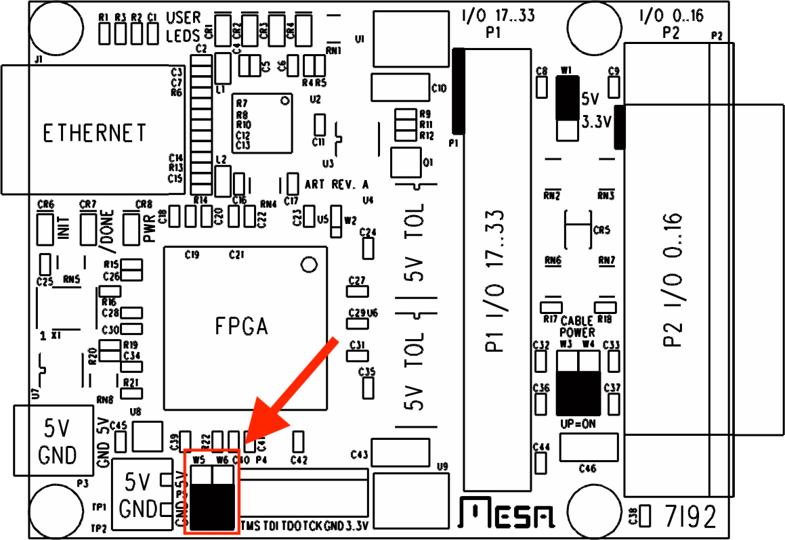

Note: ~ means the Rosetta login's home folder - /home/rosetta, or /home/reuben on machines built before November 2026. Commands written with ~ work on both.
This page covers installing and setting up the Rosetta software on the Raspberry Pi, and setting up the Mesa cards in the base box and the optional expansion box. Build the hardware first - see Hardware Build.
|
|
Prerequisites
To get the software downloaded for installing and setting up Rosetta, you will need:
- Computer connected to the internet with Linux, macOS, or Windows.
- microSD card reader/writer on that computer.
- Authority on that computer to install Raspberry Pi Imager
You will also need:
- The Rosetta hardware, built as described in Hardware Build, with each Mesa card's W5/W6 jumpers at the factory setting (both down).
- A WiFi network with internet access.
|
|
Part 1 - Build the Boot Drive for LinuxCNC
There are several distinct paths for setting up LinuxCNC on Rosetta. You may have access to a system that is already completely set up. Or you may install a pre-configured Rosetta installation onto an SD card. This document currently focus on the most bare option which begins with a standard LinuxCNC image and then customizes it for Rosetta.
1.1 Get the Raspberry Pi Imager
Download and install the latest Raspberry Pi Imager (version 2.0.1 or later). This is available at
The Raspberry Pi Imager is used to create the boot disk for the Raspberry Pi using the image downloaded in the next step.
1.2 Download the LinuxCNC Image File
Download the latest file from http://linuxcnc.org/downloads.
Be sure to get the one for the Raspberry Pi 5. It is probably not the 1st one on the list.
KEY NOTE: When the system gets upgraded in a later step, it will upgrade the LinuxCNC to the latest version.
1.3 Create the Boot Disk for the Raspberry Pi
Use the Raspberry Pi Imager downloaded onto the computer in step 1.1 above.
- Insert the microSD card into the computer, and ensure the computer sees it. The card will be completely overwritten. A 16G card is the smallest acceptable. Larger is desirable.
- Start the Raspberry Pi Imager. For the settings, use:
| Device | Raspberry Pi 5 |
| OS | Use custom (the bottom selection). Select the file you just downloaded in the prior step. |
| Storage | This is for the microSD card you just added in step a, above.
Be sure to not select your computer’s main hard drive. |
| Writing | This will show a summary. |
- Click WRITE
An alternative is to use usbimager to copy an existing SD card.
|
|
Part 2 - Configure Linux on the Raspberry Pi
A Word about Network Connections
The Raspberry Pi has two network connections, and each has its own job:
- WiFi is the Raspberry Pi's connection to the internet (for setup, updates and web pages).
- The wired connection goes only to the Ethernet switch in the base box, which connects the Raspberry Pi to the Mesa cards. It has no gateway and no internet, and nothing else is plugged into that switch.
A new Mesa card answers at its factory address, 192.168.1.121. So during setup the Raspberry Pi's wired connection starts on 192.168.1.120 to reach it. In Part 3, each card is given its permanent address, and the Raspberry Pi moves to 10.10.10.100:
| Part | IP Address | |
| Initial | Set To | |
| Raspberry Pi (wired) | 192.168.1.120 | 10.10.10.100 |
| Base card | 192.168.1.121 | 10.10.10.10 |
| Expansion card | 192.168.1.121 | 10.10.10.11 |
2.1 Start the Raspberry Pi
Install the microSD card into the Raspberry Pi and start the Raspberry Pi. When presented with the boot-up screen, continue.
Do not try to configure the WiFi by clicking on the icon at the top right of the screen. That will mess up the startup process.
2.2 Set System Defaults
Open a terminal emulator and enter this command:
|
sudo passwd rpi-first-boot-wizard |
Set the password to something simple like “rosetta”. You may not need this, but if the screen locks before everything is changed over to the new username, you may need this.
In the pop-up window which came at start-up, select the values as outlined below:
| Country | United States |
| Language | American English |
| Timezone | (whatever you wish) |
| ☑ Use English Language ☑ Use US keyboard | |
Click Next, and then enter this information.
Use the username “rosetta”. (Machines built before November 2026 used “reuben”. Rosetta works with any username, but the same one on every machine keeps support simple.)
| Username | rosetta |
| Password | rosetta |
| Confirm Password | rosetta |
Click Next.
Make no changes on that page. Click Next.
Select the WiFi to use, and enter your WiFi password. Click Next.
Click Next to take the option to update the software.
Click Launch. The system will reboot at the end.
2.3 Set Wired Network Connection & Test Network Connections
| At this point, WiFi should be working. It is best to open the web browser and bring up this page. That way, you can copy the commands from the page, and paste them into a terminal emulator. The web site is https://rosetta.colvintools.com/Rosetta_Support_Manual/. |
For this step, connect only the base box: the Raspberry Pi and the base card plugged into the switch, and the expansion box's Ethernet cable unplugged.
Open a terminal emulator, and enter this command (it is a single command line).
|
nmcli con add type ethernet con-name 'Wired Ethernet' ipv4.method manual ipv4.addresses 192.168.1.120/24 |
The automated install in Part 3 deletes and re-creates this connection, so it does no harm if you run this more than once.
Test that everything works.
2.3.1 Test 1
Open a web browser and ensure you can open some web page, e.g., Google.com. This tests the WiFi connection. If it doesn't work, check the WiFi.
Close the web browser.
2.3.2 Test 2
Ping the base card at its factory address by entering this command. Press Ctrl-C to stop it.
|
ping 192.168.1.121 |
If there is no reply, check that the base box is switched on, the cables are plugged into the switch, and the card's W5/W6 jumpers are at the factory setting (both down).
Close the terminal emulator.
2.4 Set Rest of System Options
Open a terminal emulator, and enter this command:
|
sudo raspi-config |
Select
Select
Select
For the question, “Would you like to reboot now?”, select Yes.
2.5 Download the Files Needed
Open a terminal session, and enter these 5 commands (the git clone command is a single line):
|
mkdir linuxcnc |
Once the files have been downloaded, they will be in
|
~/linuxcnc/configs/Rosetta |
2.6 Clean Up the Desktop
Right-click on the desktop. Select Desktop Settings …
|
|
Part 3 - Setup LinuxCNC
|
 W6 jumper location |
The automated install sets up the base box. If there is an expansion box, add it afterwards (3.2). If a script fails, every step can also be done by hand (3.3).
| The Raspberry Pi and the base card share one 5V power supply. Never power the card on by itself while the Raspberry Pi is running - that restarts the Raspberry Pi without shutting it down. When the jumpers are moved, shut down and switch off the whole machine. |
3.1 Run the Automated Install (Base Box)
Ensure
- the Raspberry Pi and the base card are powered on, and both are plugged into the switch,
- the expansion box (if any) is unplugged from the switch,
- the base card's W5/W6 jumpers are at the factory setting (both down), and
- WiFi is working (the install downloads programs from the internet).
Open a terminal emulator, and enter this command:
|
bash ~/linuxcnc/configs/Rosetta/Rosetta_Setup/Rosetta_Install_Debian_13_Trixie.sh |
The install asks these questions while it sets up the base card:
| “Connect ONLY the card being set up…” | Check that only the base card is connected, then press Enter. |
| “Write the Rosetta firmware to it (needed on a new card)?” | y for a new card. N if the card already has the Rosetta firmware. |
| “Store 10.10.10.10 as this card’s address?” | y |
| “Move the Pi’s wired connection to 10.10.10.100 now?” | y |
| “Delete them (the one in use is kept)?” | Only asked if there are extra wired connections. y |
| “Enter this system's serial number…” | The number on the machine's label, e.g. 4. Press Enter to skip - it is asked again at each update. The computer is then named after it, e.g. rosetta-004 (nothing to answer; it takes effect at the restart that ends the install). |
| “Shut the Pi down now?” (at the end) | y |
The rest of the install runs by itself. It installs the programs listed in 3.3.3 and sets up the desktop and menus (see 3.6):
- the Rosetta and Gcode folder shortcuts, in the file manager's Places list and as two Turk's head launchers on the bottom panel,
- the Rosetta menu under Applications,
- the Rosetta, Rosetta Settings, Rosetta User Manual and Rosetta Gcode Library icons on the desktop, and
- Shut Down, at the bottom of the Applications menu and on the bottom panel.
Last, it checks the install. Each check is listed as OK, WARN (works, but worth a look - e.g. no serial number) or FAIL. The list is also saved in ~/Documents/Rosetta_Install_Check.txt. The base card can't answer yet (its jumper is moved next), so that is only a WARN for now. If anything says FAIL, see 3.3.
3.1.1 Move the Base Card's Jumpers
At the end, the install shuts the Raspberry Pi down (if you answered y). Then:
- Wait for the screen to go dark, then switch the machine off.
- On the base card, move the W6 jumper up (W5 stays down). This is the setting the 7i92 manual calls EEPROM: the card uses the address stored on it, 10.10.10.10.
- Switch the machine on.
- Once the Raspberry Pi has started, open a terminal emulator and enter:
|
python3 ~/linuxcnc/configs/Rosetta/Rosetta_Setup/Rosetta_Install_Check.py |
This is the full check of the install. It should say
OK Base card answers at 10.10.10.10
and end with 0 failed (FAIL). Each FAIL line says what is wrong. The list is saved in ~/Documents/Rosetta_Install_Check.txt - send it to support if you need help.
If the card doesn't answer, see 3.3.1, Step 7. For anything else that failed, see 3.3.
3.2 Add the Expansion Box
This step is only for a system with an expansion box. If one is not installed, proceed to step 3.4.
The expansion card is set up the same way as the base card, but is given the address 10.10.10.11. It also starts at the factory address 192.168.1.121, so the Raspberry Pi goes back to 192.168.1.120 while it is set up. Only the card being set up may be connected.
- Shut the Raspberry Pi down, and switch the machine off.
- Unplug the base card's Ethernet cable from the switch. Plug the expansion box's Ethernet cable into the switch. The expansion card's W5/W6 jumpers must be at the factory setting (both down).
- Switch the base box and the expansion box on. Once the Raspberry Pi has started, open a terminal emulator. Put the Raspberry Pi back on 192.168.1.120 (answer y to “Continue?”):
|
bash ~/linuxcnc/configs/Rosetta/Rosetta_Change_Network.sh back |
- Set up the expansion card:
|
bash ~/linuxcnc/configs/Rosetta/Rosetta_Change_Network.sh expansion |
- Wait for the screen to go dark, then switch the base box and the expansion box off.
- On the expansion card, move the W6 jumper up (W5 stays down) - the EEPROM setting.
- Plug the base card's Ethernet cable back into the switch.
- Switch both boxes on. Once the Raspberry Pi has started, enter:
|
bash ~/linuxcnc/configs/Rosetta/Rosetta_Change_Network.sh check |
Card at 10.10.10.10 answers. and Card at 10.10.10.11 answers.
- Open the Rosetta Settings program. On the Axis Selection tab, tick Expansion Box - Connected. Channels 06 - 09 can now be assigned. (The change takes effect the next time Rosetta starts.)
3.3 If a Script Fails - Doing It by Hand
Use these steps if the automated install or the network script (Rosetta_Change_Network.sh) stops with an error. Start at the step where it stopped. Close Rosetta (LinuxCNC) first - the network steps can't be done while it is running.
If no errors were encountered, proceed to step 3.4.
3.3.1 Set Up a Mesa Card by Hand
These are the commands Rosetta_Change_Network.sh runs. Use 10.10.10.10 for the base card or 10.10.10.11 for the expansion card wherever the steps say new address.
Step 1 - Find the wired connection. List the connections:
|
nmcli -f NAME,UUID,DEVICE con show |
|
sudo nmcli con add type ethernet con-name 'Wired Ethernet' ipv4.method manual ipv4.addresses 192.168.1.120/24 |
|
sudo nmcli con delete <UUID> |
Step 2 - Put the Raspberry Pi on 192.168.1.120 (to reach a card at its factory address):
|
sudo nmcli con mod "Wired Ethernet" ipv4.method manual ipv4.addresses 192.168.1.120/24 ipv4.gateway "" ipv4.dns "" |
Step 3 - Check the card answers. Connect only the card being set up, with its W5/W6 jumpers at the factory setting (both down), and switch it on. Then:
|
mesaflash --device 7i92t --addr 192.168.1.121 --readhmid |
Step 4 - Write the Rosetta firmware (a new card only):
|
mesaflash --device 7i92t --addr 192.168.1.121 --write ~/linuxcnc/configs/Rosetta/Rosetta_Setup/MesaCard/7i92t_Rosetta.bin --reload |
Step 5 - Store the card's new address:
|
mesaflash --device 7i92t --addr 192.168.1.121 --set ip=<new address> |
--set ip=10.10.10.10 for the base card. (The option is --set ip=, with a space.)
Step 6 - Move the Raspberry Pi to 10.10.10.100:
|
sudo nmcli con mod "Wired Ethernet" ipv4.method manual ipv4.addresses 10.10.10.100/24 ipv4.gateway "" ipv4.dns "" connection.autoconnect-priority 10 |
Step 7 - Shut down, move the jumper, and check.
|
sudo poweroff |
|
ip -4 addr show eth0 |
inet 10.10.10.100/24. If it doesn't, repeat Step 6. Each card that is set up and connected should list its details.
3.3.2 Undo: Put a Card or the Raspberry Pi Back
- A card: switch the machine off, put the card's W5/W6 jumpers back to the factory setting (both down), and switch on. It answers at 192.168.1.121 again.
- The Raspberry Pi: run
bash ~/linuxcnc/configs/Rosetta/Rosetta_Change_Network.sh back, or Step 2 above.
3.3.3 Automated Install Programs
These programs should have been installed by the Automated Install program, Rosetta_Install_Debian_13_Trixie.sh. If they are not, the commands are below for installing them.
Copy the Mesa card files into /usr/lib/firmware/hm2/hostmot2
|
sudo mkdir -p /usr/lib/firmware/hm2/hostmot2 |
Copy .axisrc into ~
|
cd ~ |
Create the gcode library
|
cd ~/linuxcnc/configs/Rosetta |
Copy the starting settings file into Documents
|
cd ~/Documents |
Install ClamAV
|
cd ~ |
Install menulibre
|
sudo apt install menulibre |
Install galculator
|
sudo apt install galculator |
Install xfce4-screenshooter
|
sudo apt install xfce4-screenshooter |
Install Claude Code
|
# Install Node 20 if you don't have it (Node 18+ required) # Set up a user-level npm prefix (avoids sudo/permission mess) # Install Claude Code claude --version |
Install Chromium
|
sudo apt update |
Add the folder shortcuts
|
~/linuxcnc/configs/Rosetta/Rosetta_Setup/Rosetta_Add_Shortcuts.sh |
Record the serial number
|
~/linuxcnc/configs/Rosetta/Rosetta_Setup/Rosetta_Set_Serial_Number.sh |
Name the computer after the serial number
|
~/linuxcnc/configs/Rosetta/Rosetta_Setup/Rosetta_Set_Machine_Name.sh --install |
Set up the Rosetta menu and desktop icons
|
~/linuxcnc/configs/Rosetta/Rosetta_Setup/Rosetta_Add_Menu_And_Desktop.sh --force |
Add the Rosette Designer to the Rosetta menu
|
~/linuxcnc/configs/Rosetta/Rosetta_Setup/Rosetta_Add_Rosette_Designer.sh --force |
Add Shut Down to the menu and the bottom panel
|
~/linuxcnc/configs/Rosetta/Rosetta_Setup/Rosetta_Add_Shut_Down.sh --force |
Add the Geometric Chuck Designer to the Rosetta menu
|
~/linuxcnc/configs/Rosetta/Rosetta_Setup/Rosetta_Add_GeoChuck_Designer.sh --force |
Add the User Manual and Gcode Library icons
|
~/linuxcnc/configs/Rosetta/Rosetta_Setup/Rosetta_Add_Manuals.sh --force |
Check the install
|
python3 ~/linuxcnc/configs/Rosetta/Rosetta_Setup/Rosetta_Install_Check.py |
The menu and desktop steps must be run from a terminal emulator on the Raspberry Pi's own screen, not over SSH - they can't mark the desktop icons as trusted without it. Run them in the order above: the Rosetta menu first, since the next three add to it.
3.4 Schedule the Virus Scan
ClamAV keeps its virus signatures up to date by itself. Set up the weekly scan as described in Virus Scanning - Scheduling the Weekly Scan.
3.5 Set the Wallpaper
Open the file manager. From the folder
|
~/linuxcnc/configs/Rosetta/Rosetta_Setup/Images |
right-click on
then select Set as wallpaper.
3.6 Desktop Icons and Applications Menu
The automated install does this - nothing to do by hand. (Until November 2026 it was done here with Create Launcher and MenuLibre.) The install sets up:
| Desktop | Rosetta, Rosetta Settings, Rosetta User Manual and Rosetta Gcode Library - ready to use, with no “Untrusted application launcher” question the first time. |
| Applications > Rosetta | Rosetta, Rosetta Settings, Back Up to USB, Update Rosetta (runs in a terminal window), Rosette Designer, Geometric Chuck Designer, Rosetta User Manual and Rosetta Gcode Library. The Rosetta menu sits above Terminal Emulator. |
| Applications menu | Shut Down at the bottom. Mail Reader, Games, Multimedia, Office and Science are hidden. |
| Bottom panel | The Rosetta and Gcode folders and Shut Down, after the File Manager. |
| File manager | Rosetta and Gcode in the Places list. |
The install check (3.1.1) confirms each of these is there and opens what it should. If one failed, run its step again from 3.3.3. Anything not finished is also tried again at each update.
MenuLibre is still installed, for anyone who wants to change the menus further.
3.7 Set Rosetta to Auto-start When Starting up the System
This is an optional step.
Click on Applications, then Settings, and then Session and Startup.
Click on the Application Autostart tab.
Click +Add.
For the entries, enter:
| Name | Rosetta |
| Description | |
| Command |
bash ~/linuxcnc/configs/Rosetta/Rosetta_Launch.sh |
| Trigger | on login |
Click OK
3.8 Turn off Hidden Files in Thunar
Open the File Manager (Thunar). Click View, then unclick Show Hidden Files.
3.9 Reboot
Everything should be good now. Open a terminal emulator and enter this command:
|
sudo reboot |
|
|
Part 4 - Install Development System Applications
Install these applications on a development system. They are not needed on production systems, but can be installed if desired.
4.1 Glade
Glade is used to develop the display panels used with GladeVCP.
Open a terminal emulator, and enter these commands:
|
sudo apt install glade |
4.2 GIMP
The GNU Image Manipulation Program is useful for editing image files.
Open a terminal emulator, and enter these commands:
|
sudo apt install gimp |
|
|
Part 5 - Other Notes
5.1 To SSH In
To connect to the machine using SSH, use the command below, with the Raspberry Pi's WiFi address (the wired address, 10.10.10.100, can only be reached from the switch). To find the WiFi address, enter hostname -I on the Raspberry Pi.
|
ssh rosetta@<WiFi address of the Pi> |
5.2 To Unzip
|
sudo apt update |